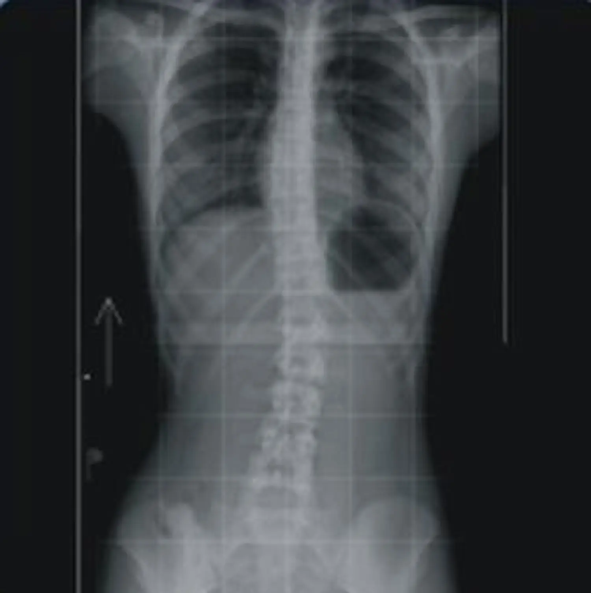
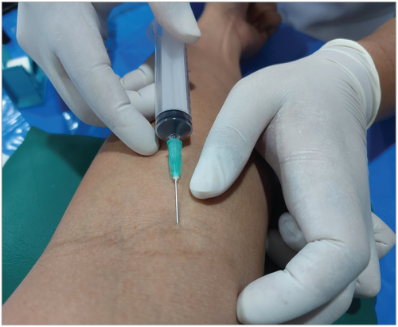

Your best health curve starts here.
Stop drowning in data. Start understanding what actually matters - with a doctor, a framework, and the simplicity you deserve.
Get started with SomaticSleep scores, glucose spikes, heart rate variability. You've never known more about your body. And yet you've never felt more lost about what to actually do.
Read onWe were promised that tracking everything would unlock perfect health. Strap on a watch. Prick your finger. Log every meal. The data would reveal the answers.
It didn't. Instead, we got flooded with numbers we don't understand, trends we can't interpret, and scores that shift our mood before we've even gotten out of bed.
When your tracker says you slept well, you feel great. When it says you didn't, even if you woke up feeling fine, suddenly you're sluggish, irritable, defeated. The number overwrites your own experience.
This is the power of suggestion dressed up as science. The device isn't measuring your wellbeing. It's dictating it.
Most wearable sensors carry significant margins of error. You're making decisions based on approximations, dressed up to look like certainty.
Your wrist-based glucose estimate, your ring's sleep staging, your watch's blood oxygen reading. They're directional at best. And when you start making real health decisions based on fuzzy inputs, you're not optimizing. You're gambling.
While you're obsessing over your glucose curve after a banana, you might be walking around with undiagnosed high blood pressure, a genetic predisposition to heart disease, or joint degeneration that's silently progressing.
The tracker shows what's easy to measure. Not what matters most. And so you pour energy into micro-optimizing metrics that rank low on the list of things that will actually keep you alive and well.
There's no holistic view. Your tracker does its thing. Your doctor does theirs. Your lab results sit in a portal you logged into once. Everything is disconnected, and nobody is looking at the full picture.
Here's something the wellness industry won't tell you: the act of measuring your health is not neutral. Every test, scan or clinic visit carries its own cost - biological, psychological, and sometimes physical.


Over-measurement doesn't make you healthier. It puts you on a treadmill of intervention. Fixing things that weren't broken, stressing systems that were doing fine, and replacing peace of mind with permanent vigilance.
The problem was never a lack of information. It was a lack of structure. A lack of priorities. A lack of someone telling you: this is what matters right now, for you, today.
The first step isn't tracking more. It's connecting what already exists, your medical records, your lab work, your wearable data, your family history, into one unified picture, supervised by a real doctor who sees all of it.
We bring together every data source that already exists. Wearables, labs, imaging, clinical history. Into a single, coherent health profile. No more fragmented portals and disconnected systems.
A real doctor reviews your complete picture. Not a chatbot, not an algorithm, not a score. A physician who understands context, nuance, and you as an individual.
Instead of chasing every metric, your doctor tells you the one or two things that will make the biggest difference for your health right now. Everything else can wait.
We separate health into three pillars, and we believe the order matters more than most people think. You wouldn't furnish a house before laying the foundation. Don't optimize your biology before securing the basics.
Resting heart rate. Blood pressure. Fasting glucose. BMI. Basic bloodwork. These aren't glamorous metrics. They don't make for exciting biohacking content. But they are the single most predictive indicators of immediate health risk and long-term survival.
If your blood pressure is elevated, nothing else matters until that's addressed. If your resting heart rate is creeping up, that signal outranks your sleep staging data by orders of magnitude.
Basics first. Always.
Once your basics are solid, we move to optimization. The metrics that don't cause immediate emergencies but profoundly shape how you age.
Muscle mass: proven to be one of the strongest predictors of longevity and quality of life after 50. Hearing health: emerging research links hearing loss directly to cognitive decline and dementia risk. Bone density. Metabolic flexibility. Inflammatory markers.
These are the things that separate aging well from aging painfully. But they only matter once the foundation is secure.
This is where most biohackers start, and where they should finish. Peptides, NAD+ infusions, hyperbaric chambers, cutting-edge longevity protocols. The bleeding edge of what medicine knows and what it's still figuring out.
We don't dismiss it. Some of it is genuinely promising. But jumping to experimental interventions before securing your basics is like installing a racing engine in a car with bald tires.
Earn the right to experiment by taking care of what's proven first.
Population averages are skewed, noisy, and often misleading. A "normal" cholesterol level means nothing if your personal trend is climbing fast. A "low" heart rate might be your normal, or it might be a warning.
Somatic tracks your biomarkers against your own history, your own trajectory, your own body. Your doctor interprets your data in context. Not against a bell curve of strangers.
Not more trackers. Not more dashboards. Not another app demanding your attention every morning. Just clarity: what matters, what to do about it, and a doctor who knows you.
Connect your data. Focus on the right layer. Trust a real physician. That's it.
Get started with Somatic
Stop drowning in data. Start understanding what actually matters - with a doctor, a framework, and the simplicity you deserve.
Get started with Somatic